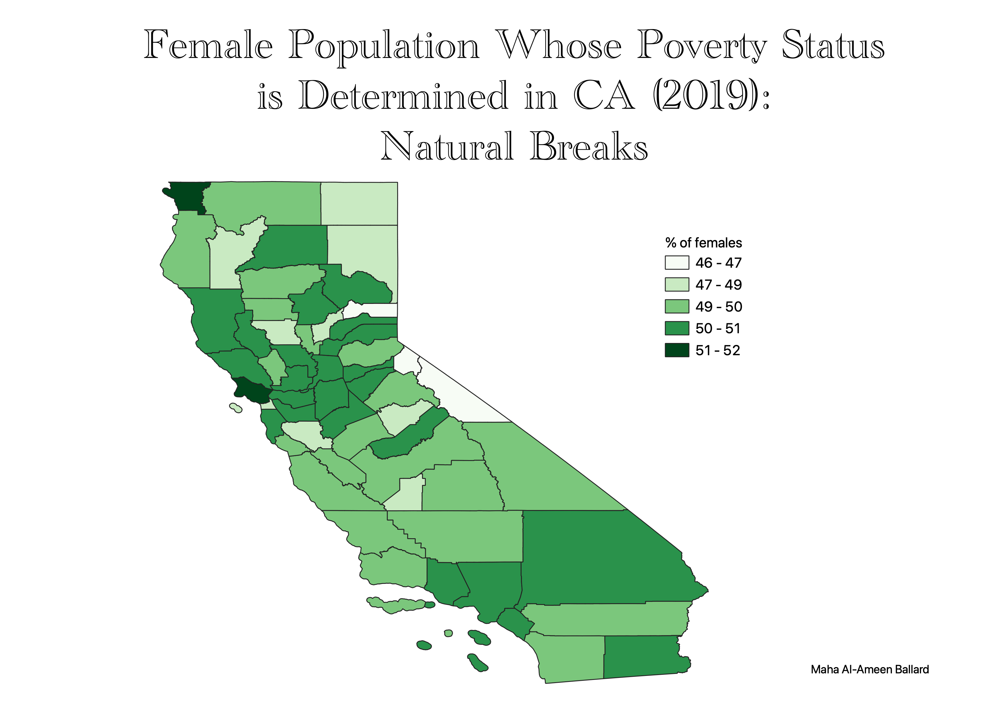
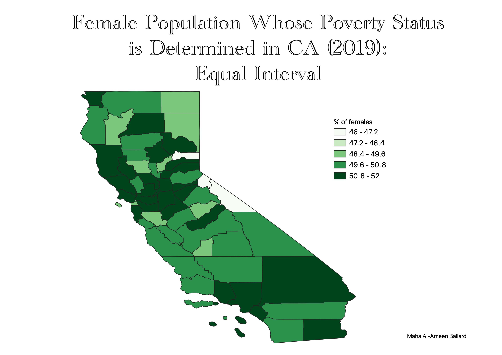

Homework 6: Census data ratios and categories
In this assignment, I had to use a new data set because my first map was already a ratio. I created a choropleth to represent the ratio between TOTAL_FEM_POP to TOTAL_POP in California in 2019.
I created this ratio to see if there was a significant difference between the number of men and women with determined
poverty statuses. I found that there is not a large difference and that just as many men have a determined poverty status.
Below are three maps using different classifications.

The natural breaks classification represents the data in its natural form, hence the name. Becasuse this classification maximizes the differences
between the data shown, the intervals are not even. We are still able to tell a difference
between the percent values in each county.
The pretty breaks classification modifies the data in intervals of 1% making it visually appealing and easy to understand
but it doesn't do a good job at showing the true differences represented in the data. Majority of the map looks the same
color which is not optimal because we want to see stark differences in a given chloropleth map.

The equal interval classification determines the intervals based on the range of the given values
in the data set. It emphasizes data in relation to the other values and that is why we can see
so many counties that have 50.8% to 52% of femals whos poverty status is determined compared to the other maps.
Data used for this project
Link to cleaned csv dataset on GitHub
Link to geoJSON on GitHub